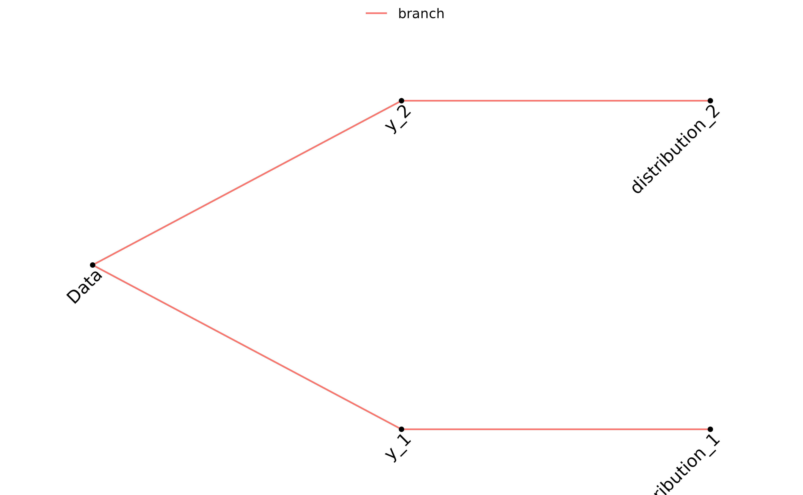
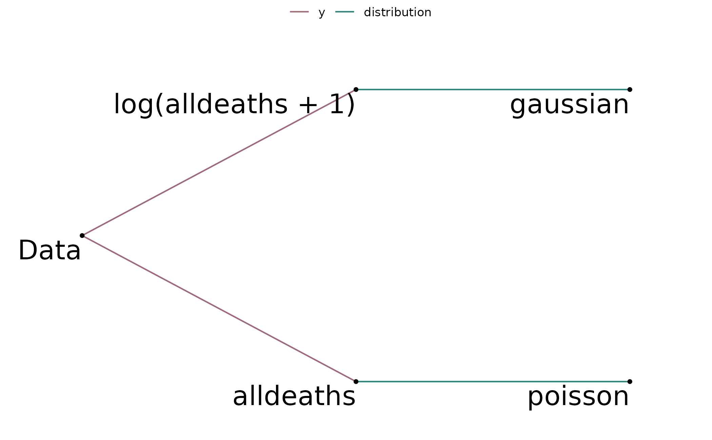

A multiverse tree diagram displays the branching combination
of all the branches added to the given mverse object
taking any branch conditions defined. The method also allows
zooming into a subset of branches using branches parameter.
multiverse_tree(
.mverse,
label = FALSE,
branches = NULL,
label_size = NULL,
label_angle = 0
)A mverse object.
A logical. Display options as labels when TRUE.
A character vector. Display a subset of branches when specified. Display all when NULL.
A numeric. Set size of option labels.
A numeric. Rotate option labels.
A ggplot object displaying the multiverse tree.
# \donttest{
# Display a multiverse tree with multiple branches.
outliers <- filter_branch(!Name %in% c("Katrina", "Audrey"), TRUE)
femininity <- mutate_branch(MasFem, Gender_MF)
strength <- mutate_branch(
NDAM, HighestWindSpeed, Minpressure_Updated_2014, log(NDAM)
)
y <- mutate_branch(alldeaths, log(alldeaths + 1))
model <- formula_branch(y ~ femininity * strength, y ~ femininity + strength)
distribution <- family_branch(poisson, gaussian)
mv <- mverse(hurricane) %>%
add_filter_branch(outliers) %>%
add_mutate_branch(femininity, strength, y) %>%
add_formula_branch(model) %>%
add_family_branch(distribution)
multiverse_tree(mv)

# Display a multiverse tree with branch conditions.
match_poisson <- branch_condition(alldeaths, poisson)
match_log_lin <- branch_condition(log(alldeaths + 1), gaussian)
add_branch_condition(mv, match_poisson)
add_branch_condition(mv, match_log_lin)
multiverse_tree(mv)
# Display a multiverse tree for a subset of branches
# with label for each option.
multiverse_tree(mv, branches = c("y", "distribution"), label = TRUE)

# adjusting size and orientation of the labels
multiverse_tree(mv, branches = c("y", "distribution"),
label = TRUE, label_size = 4, label_angle = 45)
# }